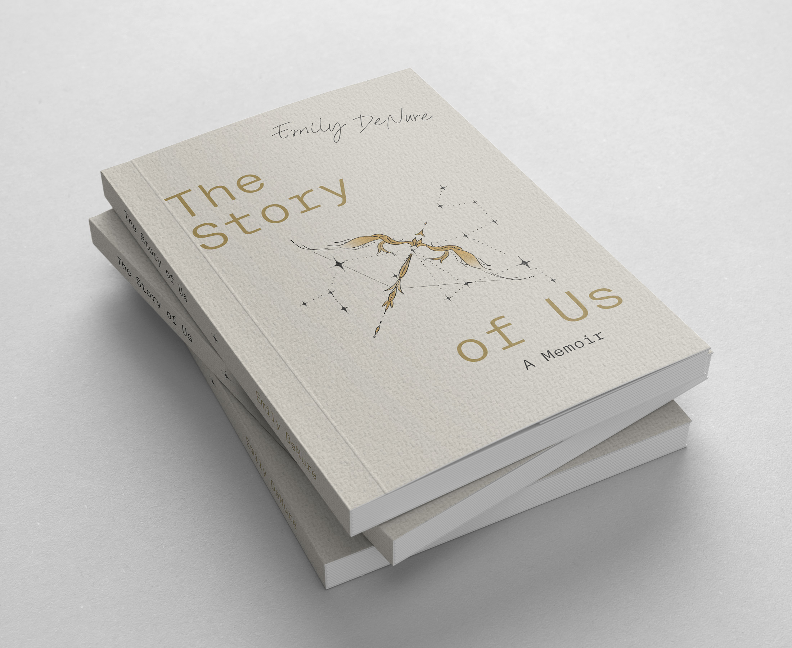

The Story of Us
The Story of Us
To feel is my superpower and I have utilized it to write my story
In her first publication, Emily shares a truly human experience with the world as she faces a variety of challenges and shows how others have the ability to change their narrative as she did herself.
In The Story of Us, we are introduced to the author, Emily DeNure, who gives a heartfelt, raw and honest testimony of her life thus far. She describes her joy and pain eloquently and vividly as she experiences losing loved ones, the divorce of her parents, acceptance, falling in and out of love, alcohol abuse, domestic violence, mental health struggles and post-traumatic stress. She forges a path of self-discovery as she faces various life obstacles and uncovers generational trauma. DeNure illustrates that we are all a product of our upbringing, but we are the ones in control of how that manifests in our lifetime. We have the power to rewrite our narrative and by sharing her story, she hopes to motivate others to do the same.
You are human. You are strong. You are safe. You are light and you are worth all of it.
Reflections
Throughout this memoir the author often mentions safety. In what ways do the people in your life make you feel safe?
The author references the symbolism of a cardinal and how she considered their appearance to be messages from Heaven. What is something in your life that you view as symbolizing a connection to something greater?
We are all a product of our upbringing. In what ways has your life been shaped by your parents and generations before you? Which aspects of your upbringing have you stayed true to and which ones have you drifted from?
Over the course of the author’s life thus far, society has shifted to help with the acceptance of the LGBTQ+ community. In what ways has society changed throughout your life to make you more confident about aspects of your own identity?
Music is therapeutic and the author often connected her life to songs or lyrics. How has music helped you get through the trials and tribulations of life? Do you have a particular artist that has produced a soundtrack to your life?
This memoir filled with stories of love, loss, acceptance and forgiveness is a product of the time, a marker of my own evolution. I will continue to move forward on my path and new lessons will be learned. I hope you gained something from this story and realized it is okay to fall off your throne every once and awhile. This memoir shifts from journal entries, to creative prose, and then more objective writing, to reveal how dynamic we are as human beings. We can’t be put in a box and are an ever-evolving accumulation of our experiences in life, all of which is allowed to live in us. What might be seen as a mess is really just the nature of being human. I would have never achieved publishing if I waited to be fully healed or known. And that is the beauty of getting older; we get to fill our brain with more knowledge and insight to help inform our next move. The past is the past. Forgive yourself and others for the mistakes, it’s our first time here. Throughout your journey in life, curate your own playlist, share your story, and feel everything. Fall in love with the world, but most importantly yourself.
XO, Emily